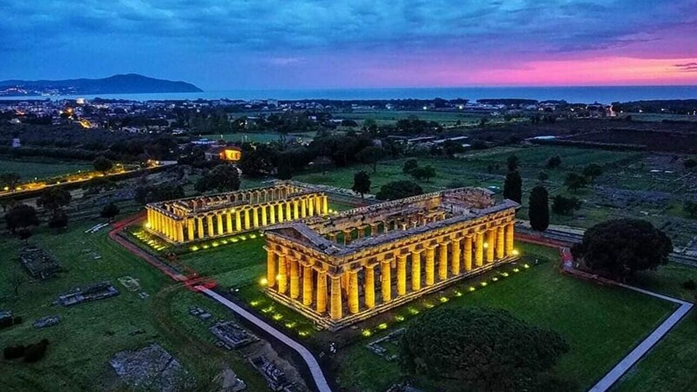
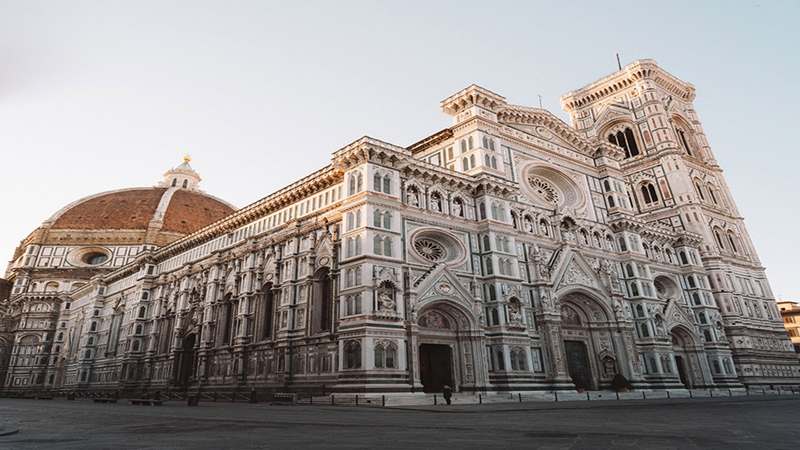

Historical Places of italy
1. Saint Mark’s Basilica

Saint Mark’s Basilica was founded in the 9th century with the purpose of housing the tomb of St Mark himself. For hundreds of years, it served as the private chapel of the city’s Doge, until it became the official Venice cathedral in 1807. The original basilica was lost in a fire in 932 and the rebuilt version, complete with Byzantine domes and marble exteriors, is what still stands today.
The Basilica is famous for its intricate design, its 8000 square metres worth of mosaics, and its epic domes. The most famous of these domes is the Cupola of the Prophets where a gold altarpiece studded with over 2000 gemstones is housed. This spectacle is best viewed from the church’s main altar, where St Mark’s sarcophagus is kept.
2. Herculaneum
You’ve certainly heard of Pompeii, but you might not have heard of Herculaneum which was the second city to be buried under the ashes of Mount Vesuvius’ eruption in 79 AD. Herculaneum is in fact much better preserved than its more famous counterpart, if not quite as large. It was hit before Pompeii, giving its inhabitants no time to escape and therefore leaving many bodies perfectly preserved here for centuries.
At this UNESCO world heritage site, you can still discover the town’s temples, baths, houses and taverns. It gives a very real sense of how spectacular this wealthy city once was. Some of its most luxurious villas overlooking the sea remain with details as small as doors and beds perfectly preserved.
3. Area Sacra di Largo Argentina
While attempting construction on a completely different building between 1926 and 1930, the oldest temple ruins ever to be found in Rome were discovered in what’s called the Area Sacra di Largo Argentina. The four temples were built in the 3rd century B.C., right by the murder site of Julius Caesar next to the theatre and Curia of Pompey.
Nobody knows who these temples were dedicated to, which is why they’ve been pragmatically renamed Temple A, B, C, and D. These days, however, the temple ruins are home to something much friendlier than roman gods… cats! Hundreds of cats, much beloved by tourists and locals, roam the old temples. They cast some pretty curious shadows when the ruins are lit up with golden lights at night.
4. Paestum

Just south of the marvellous Amalfi Coast, there once stood a town called Poseidonia, named in honour of the Greek sea god Poseidon. It was settled in the 6th century, but eventually fell under Roman control and was renamed, as it is known today, Paestum. What is left of Paestum today is a UNESCO World Heritage site including three of the best preserved ancient Greek temples in the world.
Periodic malaria outbreaks and raids upon the city by the Saracens caused Paestum’s population to abandon their home as the Roman empire was falling. Today, most of what was once a city is buried deep under Italian farmland. Only its ancient walls and the archaeological zone in the middle is open to the public, telling the tale of the long-lost grandeur of Poseidonia.
5. Florence Cathedral

The Florence Cathedral, once known as the Cattedrale di Santa Maria del Fiore in honour of that saint, is the fourth largest cathedral in the world. The building of this great gothic church began at the end of the 13th century, right on atop site of the old church of Santa Reparata (you can still spot these remains in the crypt). However, the great and iconic dome wasn’t added until two hundred years of construction later and only then was the project deemed complete.
The architects of the Cathedral, Arnolfo di Cambio and Filippo Brunelleschi, are immortalised through two statues outside the cathedral. They stand admiring its decorative pink, white and green marble exteriors. Just beyond their view in the church’s entrance halls sits the epic 1443 clock which tells time according to the ora italica, meaning its 24-hour days always end at sunset.
6. Pianosa Island
Pianosa Island is barely more than a memory of times long gone. Due to conservation efforts, only 400 people are allowed to visit each day, so consider yourself lucky if you get the chance! While Pianosa has been settled many times since the first in the late Stone age, it is virtually abandoned today. Only a handful of humans reside on the island, alongside the spectacular wildlife it’s famous for today.
Of course, this wasn’t always the case, as there are remains of a roman town on Pianosa, as well as evidence that several fishing colonies one resided here. Pirates have visited and so has Napoleon (who was a big fan) and most recently the island served as a military stronghold and high security prison. The prison was abandoned in 1998, but some of the paroled prisoners still reside on the island, running the small restaurant and museum for tourists.
7. Bhimbetka Rock Shelters, Madhya Pradesh
Villa d’Este is what you might call the pièce de résistance of the beautiful town of Tivoli, just on the outskirts of Rome. What was once a Franciscan monastery was turned into a spectacular example of Renaissance architecture and lifestyle by the town governor during the 16th century. It is presently run as a museum and holds a well-deserved spot on UNESCO’s list of world heritage sites.
While the Villa’s interiors are gorgeously adorned with frescoes on its walls and ceilings, nothing beats its view of the gardens below. Villa Este’s gardens are absolutely breath-taking, with its many sculptures and over 500 fountains. One of these had a water organ installed in 1571 that still plays today. And as if this architectural masterpiece wasn’t enough, the gardens are also complemented by their own waterfall.
8. Botanical Garden in Padua
The year 1545 saw the creation of the world’s first botanical gardens in Padua. It consisted of a central circular plot representing the earth, surrounded by a ring of water. Except for some additions and practical tweaks, this is the same layout you’ll find there today. Throughout the centuries, these botanical gardens have also retained their original purpose as a university centre of scientific research.
The Padua gardens was were botanical science was born. They created the foundation for our longstanding tradition of scientific exchanges and understanding of the relationships between nature and culture. Famous for cultivating and collecting especially rare plants, there are currently over 6,000 species at the Padua Botanical gardens. In addition to these, their library containing more than 50,000 scientific volumes is considered one of the most important in the world
9. Duomo di Milano

The most visited spot in Milan is its great gothic cathedral, the largest of its kind which can hold up to 40,000 people inside. Its construction began in 1386, with the purpose of modernising the area after Gian Galeazzo Visconti came into power. But even so, it took five whole centuries for the masterpiece to be completed. During this time, many architects, artists and sculptors worked on its construction, resulting in a building which merged the Gothic and Romanesque styles.
The Duomo di Milano is covered is beautiful white and pink marble, only upstaged by the openwork pinnacles and spires which decorate the roof. These are adorned with sculptures as well, and as a tourist, you may walk along the roof terrace and appreciate them, as well as the unrivalled views of the city from above.
10. Santa Maria delle Grazie and The Last Supper
The Church and Convent of Santa Maria delle Grazie is another outstanding work of Milanese architecture. It was initially built beginning in 1463, but reworked in the late 15th century by Bramante who is generally considered one of the great Renaissance masters. But, this emblem of the Catholic tradition has not found its way onto the UNESCO world heritage list due to a mere architectural feat…
Within the church’s refectory, on its wester wall, hands Leonardo da Vinci’s great fresco “The Last Supper”, painted between the years 1496 and 1497. Uniquely symbolic of the creative human genius, the fresco is available for viewing by the public. This didn’t always seem so likely, however. When the site of the church was struck by Allied bombing in 1943 but “The Last Supper” miraculously made it unscathed.